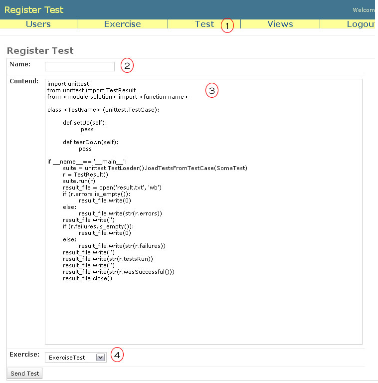
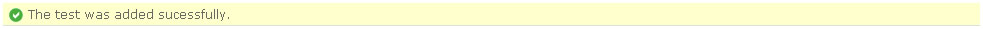

New Test
Each exercise can be associated to one test. One test is a unittest file that will be executed by the system and applicated to each program submited by the students. This page can be accessed by URL http://dataccc.gmf.ufcg.edu.br/hoopaloo_test/add_test or by Test > New Test menu option (1).

In order to register a new test is necessary informs a name to test (when the test file was saved this will be its name) (2), the Python code of test (the test is a Python file that uses the module unittest). The code of test is very important and before of you insert any code exists a template provide by system (3), you must change the name of <module solution> (this is the name of module that contains the solution) and the <function name> (this is the name of ths function will be invocated by test). Not change the "main" of test, it is important for register the result of execution. And infomrs too the exercise related to this test. This message of success is:

Always a new test is added and there are submitions for the exercise related to this test, all programs submited will be executed by the test and the students will be advised by e-mail. If any submition exist, at the moment of submitions the programs will be executed.
Only the teacher and the assistants can add new tests.